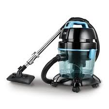
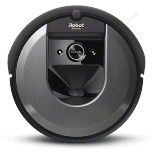

Jedan od prvih vrsta usisivaca je bio usisivac sa kesom. Ovaj usisivac je bio na pocetku komplikovan za koriscenje, a posle, kada su se ljudi navikli na ovu korisnu spravu, svima je odgovarao. Usisivac sa kesom je ovih dana redji za videti zbog drugih modela koji ga nadmasuju, poput elektricnog usisivaca zvanog: "Romba", ili usisivaca na vodu. I ako je ova vrsta usisivaca zastarela idalje ima jako puno ljudi koji ga koriste zbog njego relativno niske cene. Kod ove vrste usisivaca mora da se menji zastareli filter i takodje mora da se prazni kesa. Ovo je trenutno najkoriscenjiji tip usisivaca i cini se da ce tako da ostane jos neko vreme. Postoje razliciti proizvodjaci ovih usisivaca na nasem, kao i na stranom trzistu, poput: Samsung(bolji kvalitet, ali veca cena), GORENJE(dobar balans izmedju cene i kvaliteta), VOX(losiji kvalitet, ali i niza cena), Bosch(izuzetno kvalitetno) i drugi. Kod nas je najpopularniji bio Sloboda Usisivac, koji neki ljudi i danas pokusavaju da nabave. Danas, ljudi uglavnom koriste jeftinije usisivace, ali im to ne odgovara, iz razloga sto se oni brzo kvare i filteri su im losi pa moraju cesto da se menjaju, pa to dovodi do dodatne velike "nepotrebne" potresnje novca, koja bi se izbegla kupovinom kvalitetnog usisivaca.
Usisivaci na vodu su relativno nova inovacija koja pokazuje velkiki korak u buducnost u ovoj industriji. Usisivaci na vodu su prakticni, a njihova mana je sama tezina aparata zbog kolicine vode koja sama "kesa" sadrzi. Ovi usisivaci nemaju filter poput usisivaca sa kesom, nego na njegovom mestu nose vodu, u koju prasina pri usisavanju upada. Kod ranijih modela je bio problem curenje iz "kesa" zbog ne kvalitetnih proizvoda. Ovi modeli nisu toliko cesti u radnjama kao ni u kucama. Ljudi nisu probali nista ovakvo i ne zele, zbog toga sto ne zele da im se voda prospe, sve u svemu, nisu sigurni oko ove vodene tehnologije. Cena ovih usisivaca je obicno velika, ali je kvalitet ovih dana uvek dobar na nasem trzistu. Naj popularniji su neki poput: VOX, Beko, Bosch, Gorenje... Trenutno naj jeftinija verzija ovog usisivaca na nasem trzistu je 6 000 RSD-a, a najskuplji ide i do 38 000 RSD-a. Kod ovakvih usisivaca mnogo se isplati uzeti kvalitetnu verziju, jer ako se voda iz usisivaca prospe, bice mnogo vise nereda nego pre. Ako komora koja sadrzi vodu slucajno krene da popusta, odma usisivac nosite u servis, ili kupite novu komoru.
Elektricni usisivaci su najnoviji izum covecanstva u ovoj industriji. Pri njihovom izlasku oni su bili glomazni i ne prakticni, dok su sada mali i kompaktni. Nekada, pri njihovom dolasku na trziste, bili su izuzetno skupi, tako da vecina ljudi nije mogla da ga prijusti. Danas, ovi usisivaci nisu vise toliko skupi tako da vecina ljudi moze sebi da ga prijusti. Pravljeni su tako da mogu da se zavlace ispod niskih povrsina i imaju ugradjene senzore koji im pokazuju kada se priblizavaju ivicama. Kod ovih usisivaca moramo da menjamo filter cesce, jer je jako mali. Ovo je po vecini korisnika naj prakticniji, i naj jednostavniji tip usisivaca. Ljudi ga ne kupuju, jer misle da je skup i da ce se brzo pokvariti, sto u opste nije tacno, zapravo, ovaj usisivac dokazano izdrzi duze od njegovih kompetitora. Najpoznatiji su modeli poput: iRobot Roomba E5158, iRobot Roomba 694, Eufy RoboVac 35C i iRobot Roomba i7. Neki modeli koriste mobilne uredjaje za pokretanje i "upravljanje". Kompanija iRobot trenutno ima monopol nad trzistu robotskih usisivaca, ali to je zasluzeno, jer su im produkti jako kvalitetni i dugotrajni.
Princip rada usisivača zavisi od kompanije koja ga proizvodi, jer svi teže da naprave što bolji aparat. Razne kompanije koriste različite načine rada, da bi ispravile greške i udovoljile korisnicima. Naječešći problemi su: Usisivač pri radu samo podiže prašinu ne zadržavajući je u filtru, usisivač ne može da usisa krupniju prljavštinu, aparat je veoma glomazan i teško ga je smestiti kad se ne upotrebljava itd. Jedan od pricipa rada usisivača jeste korišćenje filtra i četki. Kada prljav vazduh biva usisan četka koja se vrti pomaže da se odvoji prašina dok kese na sebi imaju neku vrstu filtra. Ovaj način je jedan od prvobitnih načina rada usisivača i veoma je nepraktičan jer stvara veliku buku, filtri često pucaju ili se kese prepune. Drugi način je moderniji jer umesto filtra koristi vodu. Sva prljavština se zadržava na vodi tako da je drastično smanjeno propuštanje prašine, koja šteti zdravlju, kroz filtar. Često ovi usisivači poseduju ceo sistem komora sa vodom da bi se osiguralo da što manje štetnih materija dospe u atmosferu.